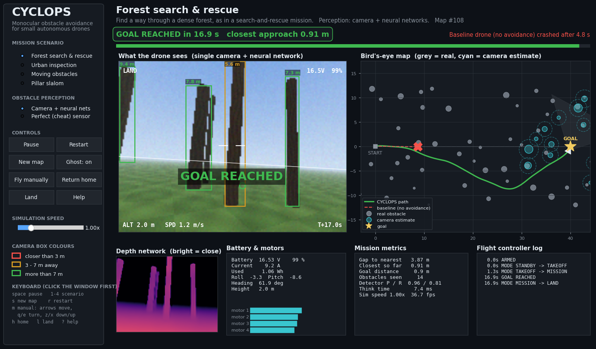
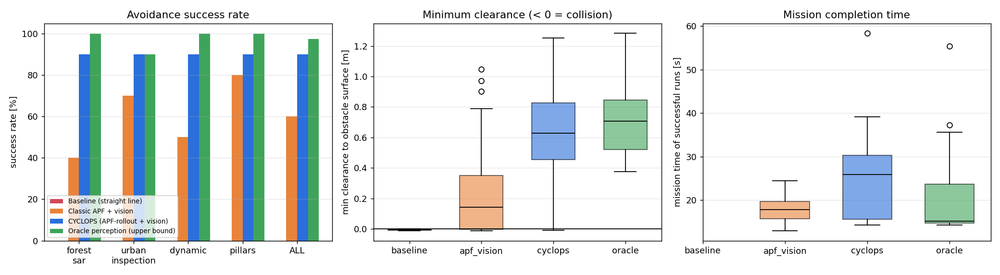
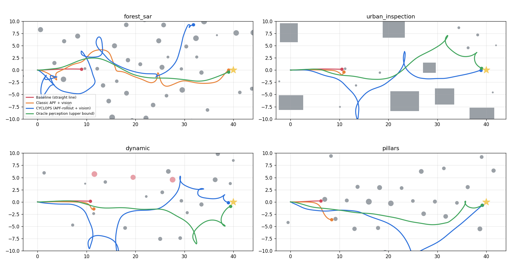
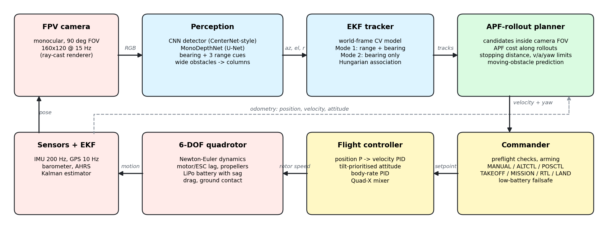
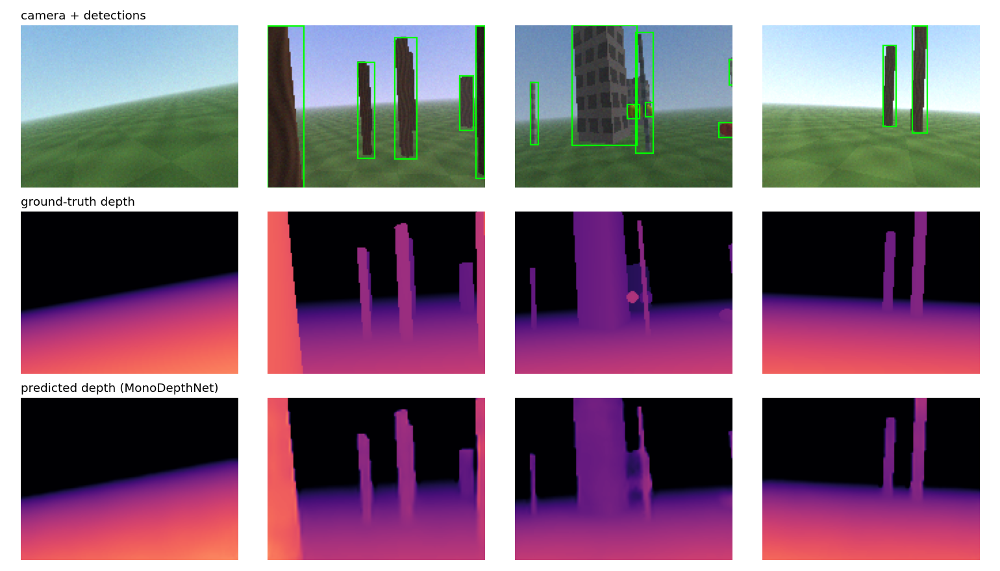
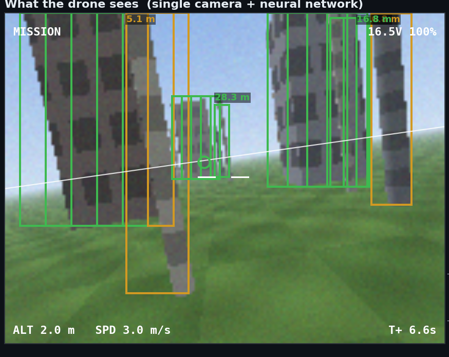
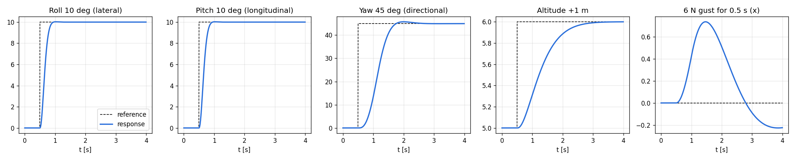
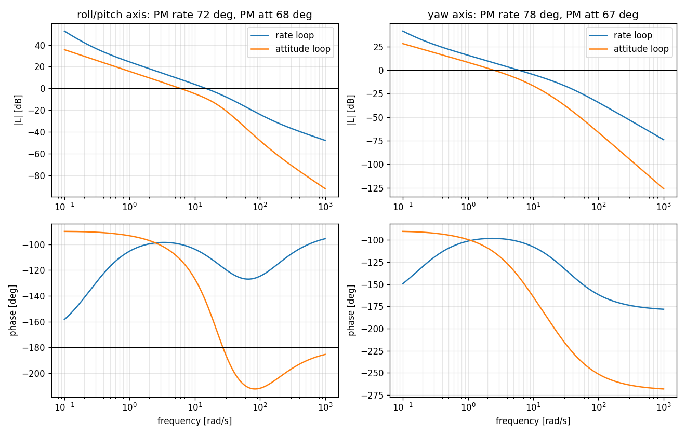
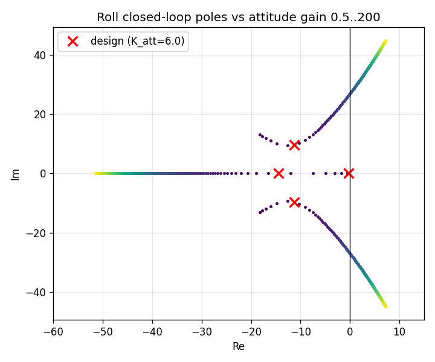
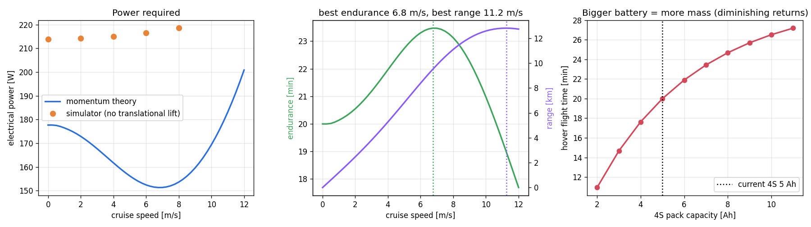

A quadrotor with one forward-facing camera, and no LiDAR or stereo, spots obstacles with a neural network. It estimates how far away they are with a second network and flies around them in real time.
Recorded from the live dashboard. The red dashed drone flies the same route with no obstacle avoidance and crashes within seconds.

160 simulated missions on maps never used during development: 10 maps × 4 scenarios × 4 methods.
| Method | Success | Collision | Timeout | Mean closest approach |
|---|---|---|---|---|
| Baseline: straight line, no avoidance | 0 % | 100 % | 0 % | – |
| Classic potential field + our vision | 60 % | 40 % | 0 % | 0.40 m |
| CYCLOPS: APF-rollout + our vision | 90 % | 7.5 % | 2.5 % | 0.68 m |
| Perfect obstacle sensor (upper bound) | 97.5 % | 0 % | 2.5 % | 0.71 m |


Based on Zhang, Zhang & Cao, ICUAS 2020: plan the avoidance around what a single camera can actually measure.



The course topics, worked out on the same quadrotor model.




| Module | Where it appears in CYCLOPS |
|---|---|
| 1 – Introduction (airframe, batteries, motors, ESC, propellers) | Quad-X airframe, thrust/torque propeller model, motor/ESC lag, LiPo battery with voltage sag |
| 2 – Design fundamentals (flight controller, RC, FPV, telemetry) | PX4-style cascaded controller, RC stick model, FPV view with OSD, telemetry panel |
| 3 – Drone basics (preflight, flight modes, roll/pitch/yaw, GPS autopilot) | Preflight checklist, MANUAL/ALTCTL/POSCTL/MISSION/RTL/LAND, low-battery failsafe |
| 4 – Modelling & control | 6-DOF Newton–Euler model (Python equivalent of a Simulink plant), sensors, Kalman filter |
| 5 – Stability & control | Open-loop eigenvalues, Bode margins, root locus, roll/pitch/yaw step responses, gust rejection |
| 6 – Applications | Search & rescue forest, urban infrastructure inspection, dynamic obstacles, pillar slalom |
| 7 – Expanding abilities (camera, FPV, sensors, speed, flight time) | Monocular camera + deep perception; endurance vs speed and battery-capacity study |
Python 3.10+ on macOS, Linux or Windows. Trained network weights are included in the repository.
git clone https://github.com/ac265640/CYCLOPS.git
cd CYCLOPS
python3 -m venv .venv && source .venv/bin/activate
pip install -r requirements.txt
python scripts/live_demo.pyThe dashboard has clickable controls for scenario, perception mode, pause, restart, new map, manual flight, return home, landing and speed. Click Help for an explanation of every panel.
The ROS 2 nodes for PX4 SITL + Gazebo are in ros2_ws/. They reuse the same perception, tracker and planner code but have not yet been run against a live PX4 simulation.